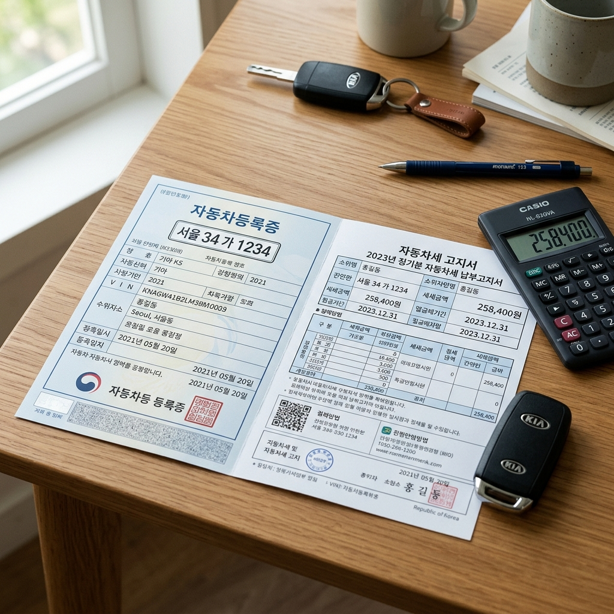

자동차세는 자동차를 보유한 사람이라면 매년 6월과 12월에 나눠 내는 지방세입니다. 일반적으로 6월에 1기분, 12월에 2기분을 각각 납부하는 방식으로 운영됩니다.
자동차세 연납이란 이 세금을 한 해에 한꺼번에 미리 납부하면 할인 혜택을 주는 제도입니다. 1년치를 한 번에 내면 지자체 입장에서도 재정 운용이 수월해지기 때문에, 납세자에게 세액 일부를 공제해 주는 방식입니다.
연납 신청은 1년에 여러 차례 기회가 있습니다. 1월·3월·6월·9월, 각 월 16일부터 말일까지가 신청 기간입니다. 연납 기회가 여러 번 있으므로 1월 신청을 놓쳤더라도 이후 기간에 신청할 수 있습니다.
연납 제도는 의무가 아닌 선택 사항입니다. 연납을 하지 않으면 기존대로 6월과 12월에 2회 분납하면 됩니다. 그러나 할인 혜택이 있는 만큼, 자동차를 보유하고 있다면 연납을 적극 검토해 보시기 바랍니다.
납부한 자동차세는 국세가 아닌 지방세이므로, 위택스 외에도 거주 지역 지자체 홈페이지나 은행 앱, ARS 등을 통해 납부할 수 있습니다. 서울 거주자는 서울시 ETAX(etax.seoul.go.kr)를 이용하는 방법도 있습니다.
자동차세 연납 신청이 가능한 기간은 다음과 같습니다. 각 기간 안에만 신청이 가능하며, 기간을 넘기면 다음 신청 가능 달을 기다려야 합니다.
| 신청 기간 | 신청 날짜 | 예상 할인 적용 대상 |
|---|---|---|
| 1기 — 1월 | 1월 16일 ~ 1월 31일 | 연세액 전체에서 연납 공제 적용 (가장 큰 혜택) |
| 2기 — 3월 | 3월 16일 ~ 3월 31일 | 3월~12월 분 세액에 할인 적용 |
| 3기 — 6월 | 6월 16일 ~ 6월 30일 | 6월~12월 분 세액에 할인 적용 (현재 시기) |
| 4기 — 9월 | 9월 16일 ~ 9월 30일 | 9월~12월 분 세액에 할인 적용 (가장 낮은 혜택) |
현재(6월 20일 기준)는 3기 신청 기간 중입니다. 이미 1기·2기를 신청하지 않았더라도, 6월 30일까지 위택스에서 신청하면 할인 혜택을 받을 수 있습니다.
할인율은 신청 시기가 빠를수록 높습니다. 1월 신청 시 가장 많은 금액을 절감할 수 있으며, 6월이나 9월로 갈수록 할인 적용 세액이 줄어들어 실질 혜택도 감소합니다.
정확한 할인율 계산은 지자체마다 조금 다를 수 있습니다. 자신의 자동차세 연납 할인액은 위택스 로그인 후 연납 신청 화면에서 확인 가능하며, 신청 전에 절감 금액을 미리 계산해 볼 수 있습니다.
자동차세 연납 할인율은 지방세특례제한법에 따라 결정됩니다. 2026년 기준으로 알려진 내용을 정리하겠습니다. 단, 할인율은 정책 개정에 따라 변동될 수 있으므로 위택스 또는 행정안전부 공식 안내를 통해 재확인하시기 바랍니다.
1월 신청: 연세액 기준 가장 큰 할인이 적용됩니다. 연납 선납 기간이 가장 길어 절감 금액이 큽니다. 예를 들어 연세액이 30만 원이라면 수천 원에서 수만 원의 절감이 가능합니다. 정확한 금액은 위택스 연납 신청 화면에서 미리 확인하세요.
3월 신청: 1월보다 할인 금액이 줄어듭니다. 선납 기간이 단축되는 만큼 혜택도 감소합니다.
6월 신청 (현재): 6월~12월분 세액에 할인이 적용됩니다. 1월 대비 혜택이 작지만 없는 것보다는 낫습니다. 6월 30일까지이므로 아직 신청 기회가 남아 있습니다.
9월 신청: 남은 기간이 가장 짧아 할인 금액도 가장 적습니다. 그래도 납부해야 하는 세금이라면 조금이라도 절약하는 것이 유리합니다.
할인 금액의 절대값이 크지 않더라도, 이미 내야 하는 세금이라면 연납 신청만으로 공짜 혜택을 받는 셈입니다. 위택스 로그인 후 연납 신청 메뉴에서 자신의 차량 세액과 절감액을 바로 확인할 수 있습니다.
위택스(wetax.go.kr)는 지방세를 온라인으로 납부하고 관리하는 행정안전부 운영 플랫폼입니다. 자동차세 연납도 이 곳에서 간편하게 신청할 수 있습니다.
Step 1 — 위택스 접속 및 로그인: 위택스 홈페이지(wetax.go.kr)에 접속합니다. 공동인증서, 간편인증(카카오·네이버·PASS 등), 또는 아이디/비밀번호로 로그인할 수 있습니다. 처음 이용한다면 공동인증서 또는 간편인증을 등록해 두세요.
Step 2 — 연납 신청 메뉴 찾기: 로그인 후 상단 메뉴에서 '부가서비스' 또는 '자동차세 연납 신청'을 선택합니다. 메뉴 구성은 업데이트에 따라 바뀔 수 있으므로, 로그인 후 홈 화면에서 '자동차세 연납' 키워드로 검색해도 됩니다.
Step 3 — 차량 조회 및 세액 확인: 본인 명의 차량이 자동으로 조회되며, 연납 시 절감되는 금액을 미리 확인할 수 있습니다. 여러 대를 보유 중이라면 각각의 차량별로 연납 신청이 필요할 수 있습니다.
Step 4 — 납부 방법 선택: 계좌이체·신용카드·체크카드 중 원하는 방법으로 납부합니다. 카드 납부 시 일부 카드사는 무이자 할부 혜택을 제공하기도 합니다. 납부 후 영수증을 저장해 두세요.
위택스 운영 시간은 평일 오전 7시~오후 10시, 토요일 오전 7시~오후 3시입니다. 일요일과 공휴일에는 서비스가 중단될 수 있습니다. 신청 기간 마지막 날(6월 30일)에는 접속자가 몰릴 수 있으므로 여유 있게 미리 신청하세요.
서울시에 거주하는 분들은 위택스 외에 서울시 ETAX(etax.seoul.go.kr)를 통해서도 자동차세를 납부하고 연납 신청을 할 수 있습니다. 서울 ETAX는 서울시가 별도로 운영하는 세금 납부 플랫폼입니다.
기능은 대체로 유사하지만, 서울 ETAX는 서울시 세금에 특화되어 있어 서울 거주자에게 더 익숙하게 설계되어 있습니다. 위택스가 전국 모든 지방세를 통합 관리하는 플랫폼이라면, ETAX는 서울시에 맞게 최적화된 서비스입니다.
어느 플랫폼을 이용해도 자동차세 연납은 동일하게 적용됩니다. 본인이 더 익숙하거나 사용하기 편한 플랫폼을 선택하시면 됩니다. 단, 위택스는 전국 어디서나 사용 가능하고 서울 ETAX는 서울시 전용이라는 점이 차이입니다.
모바일 앱도 각각 제공됩니다. 위택스 앱은 안드로이드와 iOS 모두 지원하며, 스마트폰에서 간편하게 연납 신청과 납부가 가능합니다. 서울 ETAX도 서울시 세금 앱을 별도로 제공합니다.
자동차세를 연납하는 것이 항상 유리한 것은 아닙니다. 몇 가지 상황을 비교해 드리겠습니다.
연납이 유리한 경우: 자동차세 세액이 크고, 할인율이 높은 1월에 신청할 여유 자금이 있는 경우입니다. 세액이 높을수록 할인 절대 금액이 커지므로 혜택도 명확하게 느껴집니다. 한 번에 납부하면 이후 6월·12월 납부를 신경 쓰지 않아도 된다는 편의성도 장점입니다.
분납이 유리한 경우: 목돈 지출이 부담스럽거나, 세액이 상대적으로 낮아 할인 금액이 크지 않은 경우입니다. 6월에 1기분만 납부하고 12월에 2기분을 납부하는 방식이 현금 흐름 관리에 도움이 될 수 있습니다.
핵심은 '어차피 내야 하는 세금이라면 조금이라도 아끼는 것이 낫다'는 관점입니다. 연납 할인은 별도의 노력 없이 위택스에서 클릭 몇 번으로 받을 수 있는 혜택이므로, 이미 자금에 여유가 있다면 연납을 권장드립니다.
신용카드로 연납 납부 시 카드사에서 제공하는 포인트나 캐시백 혜택도 챙길 수 있습니다. 카드별 혜택 조건이 다르므로, 자신이 보유한 카드의 지방세 납부 혜택을 미리 확인해 두면 더욱 알뜰하게 납부할 수 있습니다.

연납 신청 전 알아두어야 할 주의사항이 있습니다. 자칫 잘못하면 혜택은커녕 불편함을 겪을 수 있으니, 다음 사항을 꼭 확인하세요.
차량 매도·폐차 예정자: 연납 후 해당 연도 중에 차량을 팔거나 폐차할 경우, 남은 기간분 세액은 환급을 신청할 수 있습니다. 단, 환급 절차가 번거롭기 때문에 연내에 차를 처분할 계획이 있다면 연납 여부를 신중하게 고려하세요.
중복 신청 주의: 이미 1월이나 3월에 연납 신청을 한 경우, 6월에 다시 신청할 필요가 없습니다. 이미 연납 처리된 건에 대해 이중으로 납부되는 상황을 피하기 위해, 위택스 로그인 후 납부 내역을 먼저 확인하세요.
정기분 고지서와 혼동 주의: 6월에는 자동차세 1기분 일반 고지서가 발송됩니다. 이 고지서를 그냥 납부하면 연납이 아닌 정기 납부가 됩니다. 연납을 원한다면 고지서를 무시하고 위택스에서 연납 신청을 별도로 진행하세요.
지자체별 세율 차이: 동일한 차량이라도 지자체별 자동차세 세율에 차이가 있을 수 있습니다. 특히 경기도와 서울의 세율 적용이 다를 수 있으므로, 주소지를 기준으로 한 세액을 위택스에서 직접 확인하세요.
자동차세를 합법적으로 줄이는 방법이 몇 가지 더 있습니다. 연납 외에도 다음 방법들을 함께 알아두세요.
차령(연식) 따른 세액 감면: 자동차세는 차량 연식이 오래될수록 감면 혜택이 커집니다. 차령 3~12년 이상이면 매년 5%씩 세액이 감면되며, 12년이 넘으면 최대 50%까지 감면됩니다. 오래된 차를 보유 중이라면 감면 내용을 확인해 보세요.
장애인·국가유공자 감면: 장애인 또는 국가유공자 가구에 등록된 차량은 자동차세 전액 또는 일부가 면제될 수 있습니다. 해당하는 경우 가까운 구청 또는 세무서에 문의하시기 바랍니다.
환경부 저공해차 혜택: 전기차·수소차는 자동차세 감면 혜택이 있습니다. 하이브리드 차량도 일부 감면이 적용될 수 있으니, 차량 종류에 따라 해당 여부를 확인해 보세요.
모든 감면 혜택은 자동으로 적용되지 않는 경우가 있습니다. 위택스 또는 거주 지역 지자체 세무 부서에 문의해 자신이 받을 수 있는 모든 혜택을 꼼꼼히 챙기시길 권합니다.
Q. 연납을 신청했는데 고지서가 또 왔어요. 무시해도 되나요?
A. 연납 신청 후에도 정기분 고지서가 자동 발송되는 경우가 있습니다. 이미 연납으로 납부한 경우라면 정기 고지서를 별도로 납부할 필요가 없습니다. 위택스에서 납부 내역을 확인해 이중 납부가 되지 않도록 주의하세요.
Q. 연납을 하면 자동차 보험료도 줄어드나요?
A. 아닙니다. 자동차세 연납은 지방세에만 적용되며, 자동차 보험료와는 전혀 별개입니다. 보험료 절감은 보험사별 특약 조건을 검토하세요.
Q. 이사 후 주소 변경 시 연납은 어떻게 되나요?
A. 자동차세는 차량 등록지 기준으로 부과됩니다. 이사 후 차량 등록 주소를 변경하면 변경된 주소지 기준으로 세금이 재산정될 수 있습니다. 이사 후에는 자동차 등록 주소 변경과 세금 납부 기준을 함께 확인하세요.
Q. 법인 차량도 연납 신청이 되나요?
A. 법인 소유 차량도 자동차세 연납 신청이 가능합니다. 법인 공동인증서로 위택스에 로그인해 신청하거나, 해당 지자체 세무 부서에 문의하시면 됩니다.